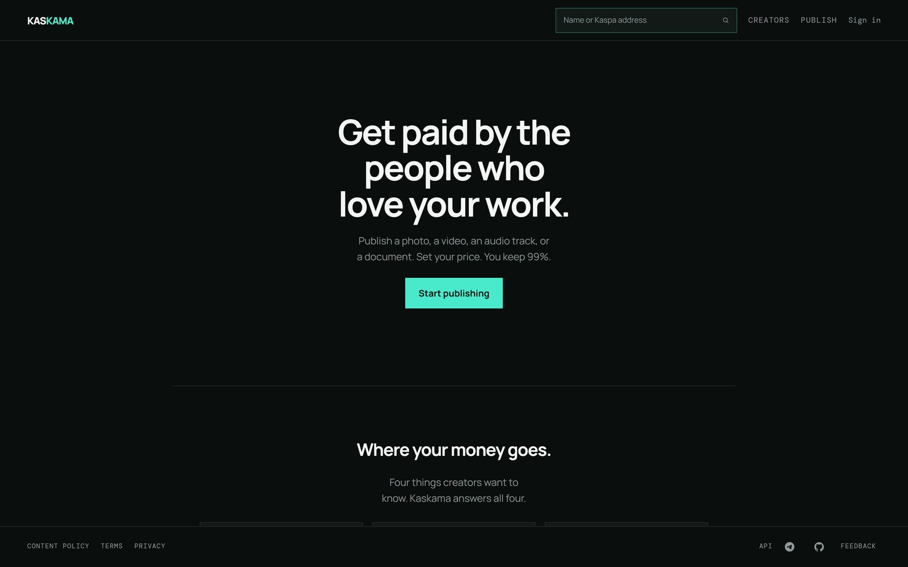
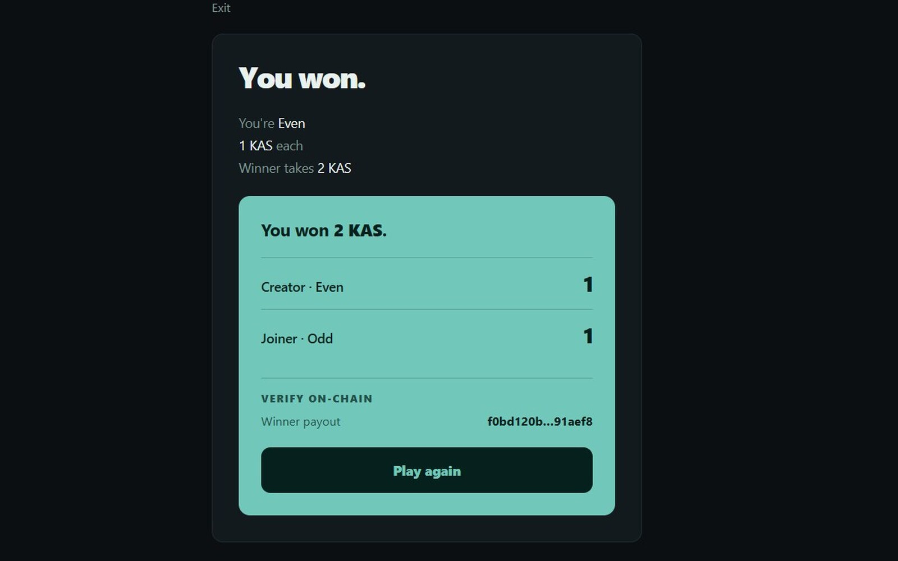
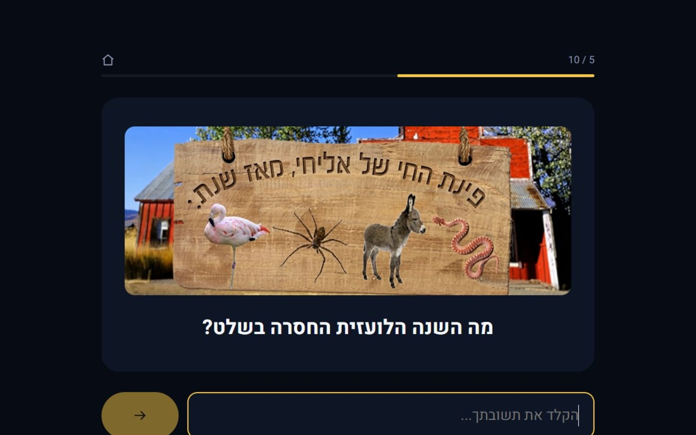
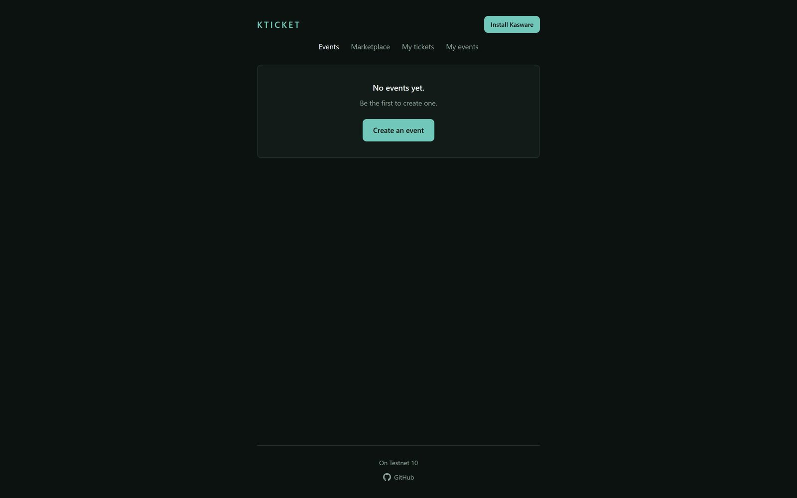
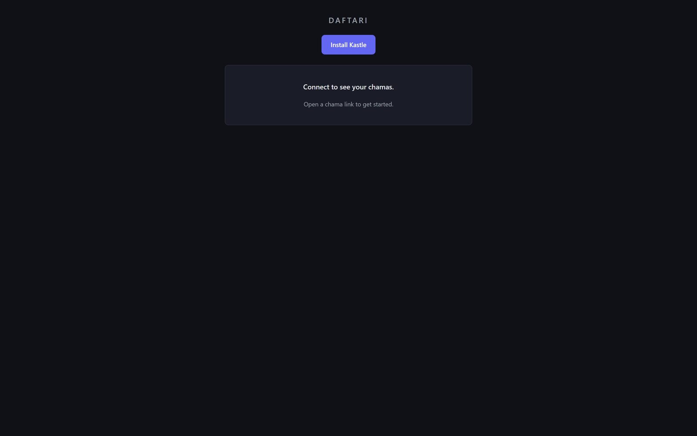

Kaskama
פרסמו תמונה, וידאו, קטע אודיו או מסמך. קבעו מחיר. שמרו 99% — הכסף עובר מהקונה ליוצר, לא דרך יתרת פלטפורמה. יוצרים מתחברים עם Kasware; המדיה נשארת פרטית.
ReactTypeScriptKaspaTurso
מהנדס Backend / ישראל
מערכות רשומות ביום. כלי משמורת עצמית על Kaspa בשאר הזמן. אני בונה דברים שממשיכים לעבוד — ושנשארים שייכים למי שמשתמש בהם.

אפליקציות
כל אחד מהם רץ. כל אחד מהם נבנה כדי להיות שלכם — לא כדי לשכור.
פרסמו תמונה, וידאו, קטע אודיו או מסמך. קבעו מחיר. שמרו 99% — הכסף עובר מהקונה ליוצר, לא דרך יתרת פלטפורמה. יוצרים מתחברים עם Kasware; המדיה נשארת פרטית.
ReactTypeScriptKaspaTurso

בחרו 1 או 2 בסתר. Even מנצח בסכום זוגי, Odd באי-זוגי. הכספים נעולים רק אחרי ששני השחקנים מותאמים, והחוזה אוכף את התוצאה — השרת לא לומד את המספר שלכם קודם.
TypeScriptKaspaCovenants

משחק טריוויה מתוזמן על אחוזים. השאלות נהיות קשות יותר ככל שפחות אנשים יודעים לענות — מ-90% עד 1%. חדר שלם משחק יחד בזמן אמת, ולוח התוצאות לא משקר.
ReactExpressSocket.IO

כרטיסים ששייכים באמת למי שמחזיק בהם. covenant-bound, משמורת עצמית, בלי מתווך. המארגן מפרסם את החוקים; המשתתף מחזיק בכרטיס. ה-API חסר מצב ומאמת כל אירוע מול השרשרת.
ReactTypeScriptFastifyKaspa

צ'אמות שמנהלות את הספר בעצמן. צ'אמה היא ארנק Kaspa אמיתי; החברים משלמים on-chain, והשרשרת היא הספר. מתחברים בחתימת Kaspa — בלי סיסמה, בלי נאמן.
TypeScriptExpressTursoKaspa
מקרה בוחן
Daftari — קבוצות חיסכון שבהן הצ'אמה היא ארנק והשרשרת היא הספר.
החברים משלמים
כל הפקדה היא עסקת Kaspa אמיתית לכתובת של הקבוצה.
ארנק הצ'אמה
הקבוצה היא ארנק אחד. אף אחד לא מחזיק אותו בשם הקבוצה.
השרשרת מחזיקה את הספר
כל תשלום הוא הרשומה. השרת יכול לקרוא אותה; הוא לא יכול לשכתב אותה.
קבוצות חיסכון מסתובבות — צ'אמות — רצות על אמון ועל ספר. החברים משלמים לפי לוח זמנים; בכל סבב, חבר אחד לוקח את הקופה. זה עובד כי כולם מכירים אחד את השני, וכי אדם אחד שומר על הרשומה. הרשומה הזו היא בדרך כלל נייר, גיליון אלקטרוני או שרשור וואטסאפ. היא גם הדבר שמתווכחים עליו.
צ'אמה ב-Daftari היא ארנק Kaspa אמיתי, לא שורה במסד נתונים. החברים הם ארנקים שמשלמים לתוכו. כל הפקדה ומשיכה היא עסקה אמיתית: נבנית בצד השרת, נחתמת בדפדפן עם ארנק Kastle, ומשודרת ל-testnet-10.
החברות נאכפת מעצמה. ארנק יכול להצטרף רק אחרי שהוא ביצע עסקה עם ארנק הצ'אמה. מצב חברתי — שמות, חברויות, אתגרי התחברות — חי ב-Turso. הכסף אף פעם לא.
אם אפשר לערוך את הרשומה, היא לא רשומה.
החלק הקשה לא היה העסקה. הוא היה לגרום לקבוצה on-chain להרגיש כמו קבוצה: להצטרף, להיות מוכר, לראות מי שילם ומי לא, בלי להפוך את העמוד ל-block explorer. מוכנות ל-mainnet היא פחות עניין של קוד ויותר של קצוות — קליטת ארנקים למי שמעולם לא החזיק מפתח, תהליכי מחלוקת שלא דורשים אותי, והרגע שבו צ'אמה גדלה מעבר לאנשים שכבר סומכים אחד על השני.
זה המבחן הכנה. לא אם העסקה מאושרת — אם הקבוצה עדיין עובדת כשהיא לא קבוצה של חברים.
אודות
החלקים שמופיעים אחרי ההשקה הם אלה שאכפת לי מהם.
תכנון, מסירה, וקריאת ה-3 לפנות בוקר. אם זה רץ בפרודקשן, זה שלי להבין ולתקן.
חבילת הבדיקות היא חלק מהמוצר, לא תיבת סימון. אמינות היא החלטת תכנון, לא משימת ניקוי.
בלי נאמן, בלי נעילה, בלי עריכות שקטות. מי שמשתמש בדבר צריך להחזיק בדבר.
הדרך
רחובות ← עכו ← הצנחנים ← רייכמן ← Cognyte.
מפקד לוחם. הובלת אנשים תחת לחץ, הרבה לפני שכתבתי קוד לפרודקשן.
תואר ראשון במדעי המחשב. היסודות, כמו שצריך — לא רק הפריימוורק של החודש.
מהנדס Backend. שלושה מיקרו-שירותים שהפכו למערכת הרשומה, בבעלות מקצה לקצה.
מחוץ לשעות: ריצה, בצ'אטה, יוגה. ערים, טבע, מעיינות. שתי תוכניות האצה בדרך.
הפינה שלי באינטרנט. בלי פיד, בלי אלגוריתם, בלי החוקים של מישהו אחר.
למה האתר הזה קייםכישורים
הסטאק שמאחורי העבודה, מהמסד ועד הדיפלוי.
Java · Spring Boot
TypeScript · Node.js · React
Python
PostgreSQL · Elasticsearch
Kafka
Turso
Docker · Kubernetes · Helm
CI/CD
MCP servers
תואר ראשון במדעי המחשב, אוניברסיטת רייכמן · מפקד לוחם, צנחנים · עברית, אנגלית, אמהרית
ניסיון
תפקידים שבהם העבודה הייתה צריכה לשרוד מפגש עם פרודקשן.
2024–2026
Cognyte · ישראל
שיחררתי שלושה מיקרו-שירותים לפרודקשן שהפכו למערכת הרשומה לנתונים עסקיים קריטיים — תכנון, מסירה ותמיכה בפרודקשן, בבעלות מקצה לקצה.
החלפתי צינור מדיה מדור קודם ב-convert-on-demand. קבצים מעובדים רק כשמישהו מבקש לנגן אותם. טרה-בייטים נחסכו.
80% כיסוי בדיקות. אפס תקלות קריטיות.
JavaSpring BootKafkaPostgreSQLDockerKubernetes
2023
Jazwares LLC
בניתי את אתר ה-B2C של החברה ב-Node.js ו-React — ערוץ חדש ישירות ללקוח ותהליכים חלקים יותר בין צוותים.
Node.jsReactB2C
2018–2019
Google ובית הספר לטכנולוגיה של אוניברסיטת רייכמן
לימדתי Python לשלושים תלמידים. הפעלתי את קמפיין הפייסבוק שמילא את התוכנית.
PythonTeachingMarketing
קוד פתוח
תיקונים שמוזגו בכלים שרצים כל יום.
שבעה PRs מוזגו: Terraform apply אופציונלי ב-CI, גישה ל-k9s דרך tunnel, סודות ב-Vault, טיפול ב-kubeconfig מיושן ותיעוד לקצוות החדים.
7 PRs מוזגומיזגתי שלושה תיקונים לתהליכים ב-Windows: הרצה ישירה, פתרון PATH וזיהוי PID ממוחזר.
3 PRs מוזגובנוי בגלוי
השימושיים שבהם מתחילים בדרך כלל מעצבן אישי.
אמרו שלום
אם אתם בונים משהו שצריך להיות בבעלות של מישהו — או שסתם בא לכם לדבר על מערכות — אמרו שלום.